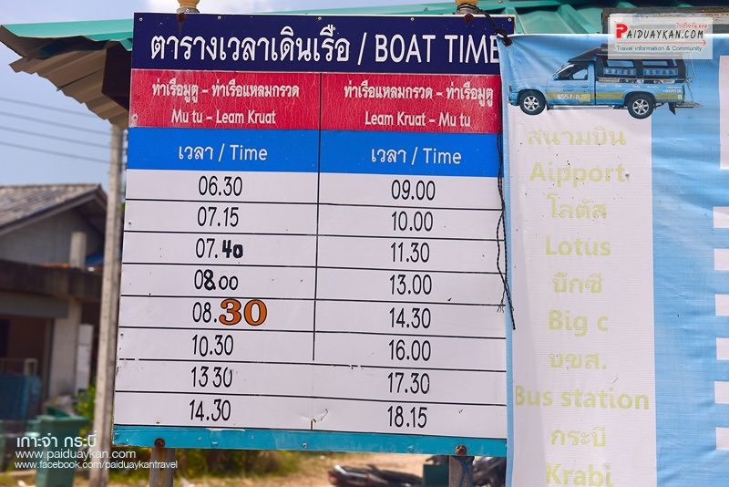
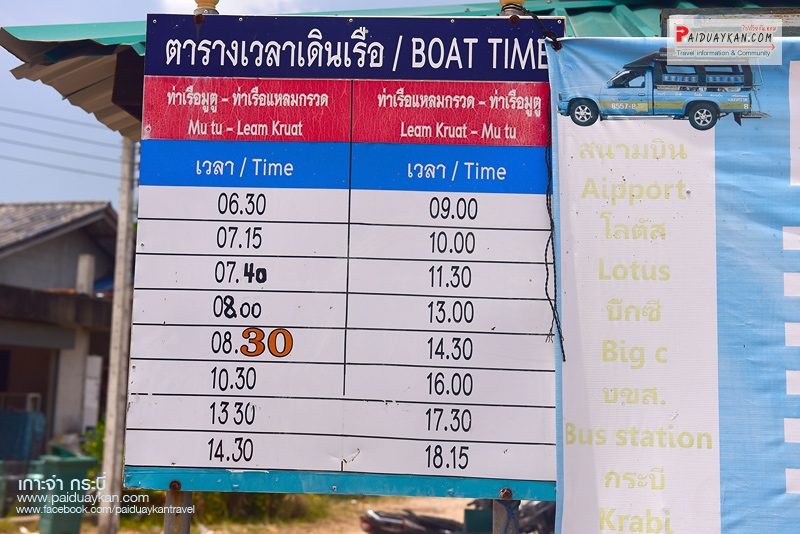

เกาะจำ กระบี่ แผนที่
ถ้าใครมีโอกาสมาเที่ยวกระบี่ แล้วอย่าลืมแวะมาเที่ยวเกาะจำกันด้วยนะครับ ชาวบ้านส่วนใหญ่ยังคงมีวิถีชีวิตเฉกเช่นชาวเล รวมถึงยังทำสวนยางพาราเสน่ห์อย่างหนึ่งของที่นี่ นั่นคือ ความเงียบสงบ จึงเหมาะสำหรับเป็นที่พักผ่อนอย่างแท้จริง
สวัสดีครับ..พอดีผมได้มีโอกาสไปเที่ยวกระบี่มาครับ และได้ไปเที่ยวที่เกาะจะมาเลยจะมารีวิวให้ชมกันครับว่า มีความน่าสนใจยังไงและสามารถเดินทางไปยังไงได้บ้าง สำหรับการเดินทางนั้นผมเริ่มต้นจากที่สนามบินกระบี่ครับ ก็คือลงเครื่องเช่ารถแล้วก็ขับตรงมาที่มาขึ้นเรือที่ท่าเรือแหลมกรวด
“เกาะจำ” ตั้งอยู่ในเขตตำบลเกาะศรีบอยา อำเภอเหนือคลอง จังหวัดกระบี่ ห่างจากชายฝั่งเพียง 22 กิโลเมตรเท่านั้น เป็นเกาะที่มีชุมชนท้องถิ่นอาศัยอยู่มาเป็นเวลานาน บนเกาะประกอบไปด้วย 3 หมู่บ้านคือ หมู่บ้านเกาะปู หมู่บ้านเกาะจำและหมู่บ้านติงไทร เกาะจำเป็นชุมชนเล็กๆ ที่เงียบสงบ ผู้คนเป็นมิตรและมีน้ำใจไมตรี อีกทั้งทัศนียภาพบนเกาะก็ยังสวยงาม มีชายหาดยาวหลายแห่ง น้ำทะเลใสสะอาด แม้จะไม่สวยใสทรายขาวเหมือนเหมือนเกาะพีพีหรือเกาะห้อง แต่จุดเด่นของเกาะจำก็คือความเงียบสงบและเป็นธรรมชาติที่ยังไม่เปลี่ยนแปลงมากนัก
ต้องนั่งเรือข้ามไปยังเกาะ โดยวิธีที่สะดวกที่สุดคือ มาขึ้นเรือที่ท่าเรือแหลมกรวด โดยอาจจะนั่งรถโดยสารมาจากในตัวเมืองมายังท่าเรือจะมีรถโดยสารให้บริการมาถึงท่าเรือแหลมกรวด แต่อาจจะต้องรอนานซักหน่อย มาชั่วโมงละ 1 คัน แต่สำหรับใครที่นำรถส่วนตัวหรือเช่ารถขับออกมากจากสนามบิน บริเวณท่าเรือมี บริการรับฝากรถ 1 คืน ราคา 60 บาท หากพ้นเวลาเที่ยงแล้วคิดเป็นอีกหนึ่งวัน คือ 120 บาท เมื่อไปถึงบริเวณท่าเรือแหลมกรวดแล้ว ถามชาวบ้านแถวนั้นได้ว่าฝากรถตรงไหน
เดินทางโดยเครื่องบินจากกรุงเทพมาลงที่สนามบินกระบี่ จากนั้นเช่ารถจากสนามบินขับออกมายังท่าเรือใช้เวลาประมาณครึ่งชั่วโมงก็มาถึงท่าเรือแหลมกรวด จากนั้นนำรถไปฝากยังที่รับฝากรถ
รอสองแถวจากตัวเมืองมายังท่าเรือแหลมกรวด จะวิ่งผ่านเส้นทาง คือ ตัวเมือง บขส สนามบิน โลตัส บิกซี
 

ท่าขึ้นเรือบริเวณแหลมกรวดที่จะไปเกาะจำ มี 2 ท่า คือ ท่าเกาะจำท่านี้ ชื่อเดียวกับเกาะ กับท่าเรือมูตู ท่านี้ คือท่าเรือหลักของเกาะจำ ซึ่งส่วนใหญ่จะลงกันที่ท่านี้ ซึ่งใกล้และสะดวกกว่า ให้ขึ้นเรือที่จะไปลงยังท่าเรือมูตู อย่าไปลงท่าเรือเกาะจำเพราะขึ้นผิดชีวิตเปลี่ยน ถ้าเจอชาวบ้าน ย้ำเลยว่าไปลงท่าเรือมูตู
เรือที่นั่งไปยังเกาะจำมีเพียงแบบเดียว เป็นเรือโดยสารขนาดเล็ก 2 ชั้น โดยเรือออกเป็นรอบตามตาราง ค่าบริการคนละ 50 บาท ใช้เวลาเดินทางไปยังท่าเรือมูตู ฝั่งเกาะจำ ประมาณ 45 นาที ก็นั่งเนิบๆ กันไป มองวิวชมทะเล รู้สึกว่าแป๊บเดียวก็ถึง
มาถึงแล้ว ท่าเรือมูตู เกาะจำ บริเวณท่าเรือมีรถมอเตอร์ไซต์รถแท็กซี่สองแถวไปส่งยังที่พัก อัตราค่าโดยสารเริ่มต้นที่ 40 บาท หากที่พักที่จองไว้บริการรถมารับที่ท่าเรือก็จะสะดวกมากขึ้น ซึ่งเราจองที่พักที่เกาะจำ รีสอร์ท มีรถจากที่พักมารับ แค่แจ้งรอบเรือไว้ว่าจะมาถึงเวลาไหน
ถนนที่สัญจรรอบเกาะ เป็นถนนสายเล็กๆ แต่สะดวกสบาย เพราะเป็นคอนกรีตเกือบทั้งหมด ระหว่างทางก็จะเต็มไปด้วยสวน ต้นไม้ และบ้านของชาวบ้าน เกาะจำนั้น ถือว่าไม่ได้เป็นเกาะที่ศิวิไลซ์หรือเจริญมากนัก ยังคงมีความเป็นวิถีชาวบ้านสูงมาก เกาะจำแบ่งชายหาดใหญ่ เป็น 3 หาด คือ หาดยาว จะอยู่ใกล้ท่าเรือมูตูที่สุด ถัดมาคือหาดติงไทร และสุดท้าย คือ หาดลูโมะ ไกลออกไปอีกอยู่ทางตอนเหนือสุดของเกาะและอยู่ในพื้นที่ส่วนที่เรียกว่าเกาะปู
เมื่อมาถึงจึงเดินเล่นชมหาดทรายค่อนข้างขาวเลยทีเดียว นักท่องเที่ยวส่วนใหญ่จะเป็นชาวต่างชาติ นั่งพักกันแบบเงียบมาก บ้างลงเล่นน้ำ บ้างอาบแดด บ้างนอนจิบเครื่องดื่มอ่านหนังสืออย่างเพลิดเพลิน เคยเห็นแต่ภาพเกาะจำในอินเตอร์เน็ตพอได้มาเห็นของจริงไม่คิดว่า น้ำทะเลจะใสได้ขนาดนี้ คือ เกินความคาดหมายไปเยอะ ที่สำคัญสงบมาก อารมณ์เหมือนเป็นเกาะส่วนตัว ไม่วุ่นวายเหมือนกับเกาะยอดฮิตของกระบี่ เป็นความรู้สึกของการมาเที่ยวทะเลที่ถวิลหา เพราะเป้าหมาย คือ มาพักผ่อนอยู่หน้าที่พักได้เต็มอิ่มกับความสวยงามที่อยู่ตรงหน้า แต่ถ้าสายลุยอยากสำรวจเกาะหรือชุมชนก็สามารถเช่ามอเตอร์ไซค์จากที่พักขี่รอบเกาะได้
เดินไปทางซ้ายอีกนิด จะเริ่มมีก้อนหินด้านหน้าหาด ทรายบริเวณนี้จะออกไปทางสีน้ำตาลหน่อยๆ แต่ค่อนข้างละเอียด
เป็นสัญญาณบอกว่าได้เวลาแล้วที่จะไปชมบรรยากาศของพระอาทิตย์ตกหน้าหาด ซึ่งก็จะได้เห็นพระอาทิตย์ดวงกลมโตแบบนี้ เกาะที่เห็นเบื้องหน้า คือ เกาะพีพี ซึ่งอยู่ใกล้กับเกาะจำมาก นักท่องเที่ยวที่มาพักเกาะจำ 2 คืน ขึ้นไป ก็จะนิยมซื้อแพคเกจทัวร์จากที่พักไปเที่ยวเกาะพีพี แบบเช้าไปเย็นกลับ
พอตกเย็น ทางรีสอร์ทก็เริ่มตั้งโต๊ะสำหรับดินเนอร์หน้าหาด จับจองที่นั่งได้ตามสบาย นั่งฟังเพลงคลอเบาๆ เคล้าเสียงคลื่น ใต้แสงเทียน สั่งอาหารและเครื่องดื่มอร่อยมาทาน โรแมนติกแท้ เป็นอีกหนึ่งเกาะที่แนะนำว่าหากมีคนรักให้พามาจะเหมาะมาก
ขอลาไปด้วยภาพสุดท้าย กับบรรยากาศของพระอาทิตย์ตกหน้าหาด
ถ้าใครมีโอกาสมาเที่ยวกระบี่ แล้วอย่าลืมแวะมาเที่ยวเกาะจำกันด้วยนะครับ ชาวบ้านส่วนใหญ่ยังคงมีวิถีชีวิตเฉกเช่นชาวเล รวมถึงยังทำสวนยางพาราเสน่ห์อย่างหนึ่งของที่นี่ นั่นคือ ความเงียบสงบ จึงเหมาะสำหรับเป็นที่พักผ่อนอย่างแท้จริง